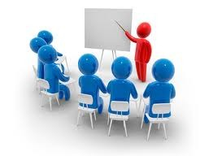

La capacitacion para el trabajo en Adoministracion pertenece al campo disciplinar de las Ciencias Sociales.
¿en qué consisten las TIC? Pues, son el conjunto de tecnologías que permiten el acceso, la producción, procesamiento, el tratamiento, almacenamiento, la transmisión y comunicación de información presentada en diferentes códigos (ya sea, texto, sonido, imagen, entre otros). Cuyo elemento más representativo es el ordenador, y más específicamente el Internet.
La Capacitacion de Servicios de Turismo en Ingles pertenece al campo disciplinar de las Ciencias Sociales.
Promueve el desarrolo de habilidades fundamentales del sector social-productivo, tales como: Liderazgo, la innovacion, el autoaprendizaje, la comunicacion asertiva en distintos contextos, la integracion efectiva de equipos de trabajo y la creatividad al brindar servicios de manera sustentable.
La capacitacion para el trabajo en Administracion pertenece al campo disciplinar de las Ciencias Sociales.
Permite al alumnado representar la realidad de su entorno social, para transformarla mediante la apropiacion de conocimientos, el descubrimiento de significados, la generacion de ideas y transmitarilas eficazmente.
Pertenece al campo disciplinar de Comunicacion y Humamidades.
Desarrolla conocimientos y habilidades para analizar, elaborar y diseñar mensajes utilizando la radio, y la television, los impresos, entre otros medios, partiendo de la base del proceso comunicativo para estructurar planes de promocion integrales.
La capacitacion para el trabajo en Contabilidad se encuentra centrada en el campo de Ciencias Sociales
Su proposito es desarrollar las competencias y habilidades practicas que permitan de forma etica y responsable aplicar el proceso contable y administrativo para el uso de la informacion financiera, la cual debe ser veraz, confiable y oportuna para la toma de decisiones en beneficio de la entidad y el sector economico en el que se desarrolle.